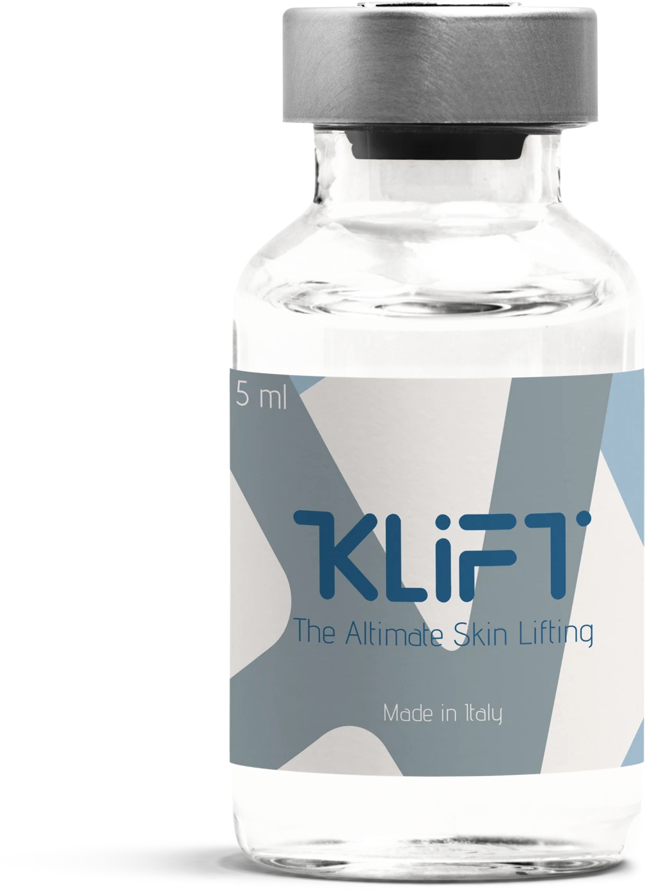

ترطيب
يعيد الماء والامتلاء إلى الأدمة ويمنح البشرة إشراقة صحية.
هيالورونات الصوديوم منخفضة وعالية الوزن · مانيتول


اثنا عشر مكوّنًا فعّالًا في عبوة واحدة، اختيرت لترطيب البشرة وإعادة بنائها وحمايتها وشدّها. بشرة تبدو أنضر وأكثر تماسكًا وإشراقًا، وتبقى طبيعية كما أنت.

ليس فيلر. بل علاج لجودة البشرة يعمل من الداخل.
كي ليفت كوكتيل متكامل للبشرة في عبوة واحدة، يُحقن داخل الأدمة. لا يضيف حجمًا ولا يغيّر ملامحك، بل يوصل حمض الهيالورونيك والأحماض الأمينية البانية للكولاجين ومضادات الأكسدة وببتيدًا محاكيًا حيويًا وDMAE وأجزاء من الأحماض النووية (DNA/RNA) إلى الأدمة.
مكوّنًا فعّالًا في عبوة واحدة
هيالورونيك في كل عبوة: 60 ملغ من كلٍّ من الوزنين
مناطق علاج، من الجبهة وتحت العين إلى الشفاه واليدين
بين الجلسات، ضمن برنامج من 2–4 جلسات
تشيخ البشرة بعدة طرق في وقت واحد: تفقد الماء، ويضعف الكولاجين، ويتراكم الإجهاد التأكسدي، وتتعمّق خطوط التعبير. لذلك يعمل كي ليفت عليها جميعًا في الوقت نفسه داخل الأدمة.
يعيد الماء والامتلاء إلى الأدمة ويمنح البشرة إشراقة صحية.
يوفّر لبنات البناء والإشارات اللازمة للكولاجين والإيلاستين.
يعادل الجذور الحرة ويهدّئ الالتهاب ويوحّد لون البشرة.
يلطّف خطوط التعبير ويساعد البشرة على أن تبدو أكثر شدًّا.
يرتبط بمستقبلات خلايا البشرة ويحفّز الخلايا الليفية، فيغذّي البشرة من الداخل ويمنحها ترطيبًا متجانسًا.
يحتفظ بالماء ويبني دعامة للأدمة، ليمنح البشرة ترطيبًا عميقًا ودعمًا لبنيتها.
تشيخ كل منطقة من الوجه والجسم بطريقة مختلفة. مع كي ليفت، يحدّد الطبيب الجرعة المناسبة لكل منطقة ولبشرتك، ويمكن استخدامه موضعيًا بعد جلسات الأجهزة.
البهتان والجفاف والخطوط الدقيقة وعدم توحّد اللون وفقدان التماسك.
الخطوط الأفقية الدقيقة والجفاف وعدم انتظام ملمس البشرة.
يساعد منطقة تحت العين على أن تبدو أكثر إشراقًا ونعومة وراحة.
يرطّب الشفاه ويساعدها على أن تبدو أنعم وأكثر تحديدًا.
خطوط الرقبة الأفقية والملمس المتجعّد وبداية الترهّل.
البشرة المعرّضة للشمس والتجعّد والخطوط العمودية الدقيقة والبقع.
بشرة رقيقة وجافة، وأوتار وأوردة أكثر وضوحًا، وبقع عمرية.
يُطبَّق بعد الوخز بالإبر الدقيقة أو الليزر التجزيئي أو الإبر الدقيقة بالترددات الراديوية لتعزيز نتائج جلسات الأجهزة.
يُطبَّق كي ليفت موضعيًا مباشرة بعد جلسات الأجهزة في العيادة، فيضيف الترطيب والمكوّنات الفعّالة إلى المنطقة المعالَجة ويكمّل نتائج الجهاز.
وخز بإبر دقيقة لتحسين الملمس والخطوط الدقيقة والمسام.
تقشير يجدّد ملمس البشرة ولونها.
وخز بالإبر الدقيقة مع طاقة الترددات الراديوية لمزيد من التماسك.
يناسب كي ليفت جميع درجات جلوجاو لشيخوخة البشرة: جلستان للبشرة الشابة (I–II) و3–4 جلسات للبشرة المتقدّمة في العمر (III–IV)، بجرعة 1 مل أو 1.5 مل لكل منطقة في الجلسة الواحدة.
يقيّم الطبيب بشرتك ويحدّد المناطق والجرعة.
يكتمل البرنامج غالبًا هنا للبشرة الشابة.
للبشرة الناضجة: دعم مستمر للتماسك والملمس.
لعلامات الشيخوخة المتقدّمة، بحسب رأي الطبيب.
تكرار الدورة أو جلسة شهرية للمحافظة على النتائج.
غليسين · برولين · أرجينين
أسيتيل هكسابيبتيد-8 · نياسيناميد · DMAE
أسيتيل سيستئين · مانيتول
DNA وRNA المتحلّلان

محلول واحد قابل للحقن، لا يحتاج إلى خلط أو تحضير. يستخدم الطبيب المنتج نفسه لكل منطقة ولكل نوع بشرة، مع تعديل الجرعة فقط.
للاستفسارات الخاصة ببشرتك، تحدّث مع طبيبك.
لا. لا يضيف كي ليفت حجمًا ولا يغيّر شكل ملامحك، بل هو معزّز للبشرة يحسّن جودتها: الترطيب والملمس والتماسك واللون. وعلى الشفاه يرطّبها ويساعدها على أن تبدو أنعم وأكثر تحديدًا دون إضافة حجم الفيلر.
عادةً جلستان للبشرة الشابة و3–4 جلسات للبشرة الأكثر نضجًا، بفاصل أسبوعين بين كل جلسة. وللمحافظة على النتائج تُكرَّر الدورة بعد 6–9 أشهر أو تُجرى جلسة شهرية واحدة.
قد تظهر نتوءات صغيرة واحمرار في أماكن الحقن، وتزول عادةً خلال ساعات إلى يوم أو يومين. يحتوي كي ليفت على المانيتول، وهو مضاد أكسدة يساعد على الحدّ من التورّم بعد الحقن.
نعم. يمكن تطبيق كي ليفت موضعيًا مباشرة بعد الوخز بالإبر الدقيقة (ديرمابن) أو الليزر التجزيئي أو الإبر الدقيقة بالترددات الراديوية.
يناسب كي ليفت جميع درجات شيخوخة البشرة، لكنه لا يُستخدم أثناء الحمل أو الرضاعة، أو عند وجود عدوى أو التهاب في منطقة الحقن، أو عند الحساسية لأي من مكوّناته. سيقيّم طبيبك مدى ملاءمته لك.
يُورَّد كي ليفت للأطباء والمختصين المؤهلين فقط. في الكويت، ريدا فارما هي الموزّع الحصري مع مخزون ودعم محلي.
اطلب كي ليفت، أو اطلب البروتوكول الكامل وقائمة أسعار العيادات. تحتوي كل علبة على 3 عبوات.
للمختصين فقط.